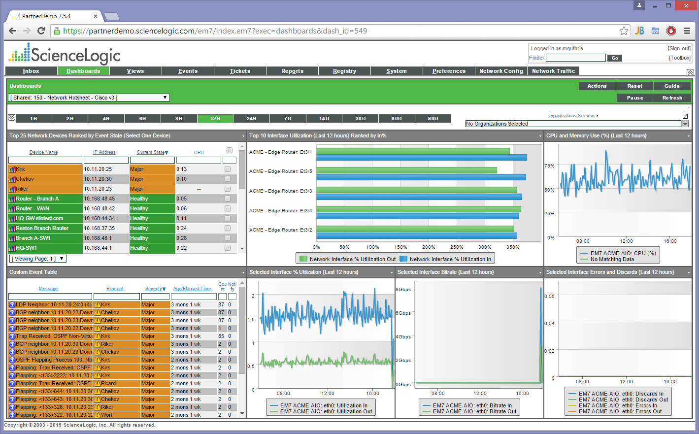

Network Monitoring for a Hybrid World
ScienceLogic is a monitoring tool built to work in the hybrid world. It can manage your systems whether they are in-house, in a private cloud or even in a public cloud environment, including Azure and AWS. It works up and down the technology stack from the network layer, through servers and up to applications. It can work as a complete monitoring solution or take any role within a mixed environment. ScienceLogic has the ability to integrate with any other monitoring solution that you have.
ScienceLogic is quick to deploy and comes with a SaaS-type licencing arrangement where you pay a small fee per-node, per-month and can cancel anytime. With a very open API it can easily be extended for any custom monitoring requirements that you have and has a highly customisable dashboard that allows you to easily focus on the things that are key for your business.
ScienceLogic is a single, integrated product with no additional modules to buy or install. All of the metrics are captured in a central database allowing reporting, asset management, event management and trouble ticketing to be performed easily and consistently across all of your monitored systems.
A system well suited to large scale managed service providers, we believe that the feature set is rich enough and yet still easy enough to use to make ScienceLogic the perfect monitoring system for today's complex and evolving corporate IT world. With multi-tenancy built throughout the product, you can easily set up views and domains that allow each department within an organisation to view the assets that matter to them and avoid the noise from those that don't.
Core Features
Monitoring systems all support the same basic features: Network level monitoring through SNMP for management of low level devices and network discovery; Server level monitoring for key resources such as CPU, memory and disk space; and specific monitoring tools for common applications such as Microsoft Exchange and Oracle databases. ScienceLogic is no exception and provides all of these features as you would expect.
What makes ScienceLogic different is that it was built for a virtualised, hybrid cloud world. With tools to manage cloud costs and under-utilised VMs, you can not only ensure that your environment is operating without problems but you can also track and investigate inefficiencies.
As well as having support for new approaches to infrastructure delivery, ScienceLogic has also simplified the management of all systems by using configurable pre-defined templates to add the right monitors to servers that it identifies by function. This templating approach removes the labour intensive tasks associated with adding monitors to hosts and keeping them up to date.
Seamless Cloud Management
With ScienceLogic you can manage your cloud and on premises infrastructure through a single application without a problem. Traditional monitoring tools could only manage what they could directly see but ScienceLogic can manage systems beyond the firewall and copes easily with devices on different networks having the same IP addresses.
4 out of 5 organisations are now using the cloud for some aspect of their technology delivery. With ScienceLogic you can manage your cloud resources just as easily as your traditional resources, all from a single web-based application.
PowerApps
One of this issues with investing in traditional monitoring tools was that even if they could do everything that you needed today, you knew they wouldn't do everything that you need tomorrow. After spending a fortune on an upfront licence, doing a difficult rollout and paying a large maintenance fee each year, you were still up for more cost for the next add-on module that you needed to support the new technology that was being rolled out in your organisation. The monitoring team was always so far behind and the costs for the next module so expensive, that you never felt you would ever catch up.
With ScienceLogic the model is completely different. Firstly there isn't an upfront cost and you only pay for the amount you use. If you want to use it for only a sub-set of your environment, or your rollout will be staggered, then no problem. Secondly the rollout is much easier than with traditional monitoring tools as the tool itself assists you with the implementation.
However the real benefit of ScienceLogic is how quickly you can support new technology. The system is easily extensible through the creation of PowerApps that can support custom monitoring and reporting. Between the internal development team and customer developed solutions, there are over 1,500 PowerApps. These are free to download and for simplicity you can download PowerPacks which are logical groupings of similar PowerApps. All included in the price, with new PowerApps being developed every day.
Trouble Tickets
ScienceLogic provides a complete trouble ticket system that can manage not only the events that it has discovered but also user generated trouble tickets.
Integration
One of the biggest issues with implementing any new monitoring system is managing the rollout and integrating with the existing legacy monitoring system. Most monitoring systems work fine when they get to do everything (SNMP network management, event monitoring, performance monitoring, manager-of-managers and trouble ticketing) because the integration is only every with their own products. However things start to get tricky when you need to integrate them with other products. Perhaps you already have a trouble ticket or asset management system that you want to keep, or you have a manager-of-managers that works well for you. In this situation it is either left to you to try to get the two products to work together or you end up employing expensive consultants to do custom work on things that should have been provided with the system in the first place.
With ScienceLogic, that isn't an issue. It is built to integrate with other products and doesn't have the huge ego associated with most enterprise monitoring solutions. ScienceLogic won't get upset if it isn't the trouble ticket system or the manager-of-managers within your organisation. It will just work nicely with whatever product or home grown solution you already have. Plus the licence model is based upon nodes, with everything included. You don't need to pay for every device on your network or pay extra for any of the components that you need. It's all included, and it's all based on monthly, not annual charges and with no nasty maintenance charges to pay each year.
Why We Chose ScienceLogic as a Partner
We have all worked extensively with monitoring products over the years. We have worked in detail with, and in some cases performed global rollouts of products from HP, IBM and BMC. Having lived through these experiences we not only believe that monitoring is critical to the effective operation of infrastructure and applications but also that ScienceLogic is the best solution that we have come across so far. 17 Ways are very pleased to be a reseller of ScienceLogic's EM7 solution.
Learn More
For more information download our fact sheet or contact us at info@17ways.com.au or call us on 1300 17WAYS.
Download ScienceLogic and 17 Ways Factsheet